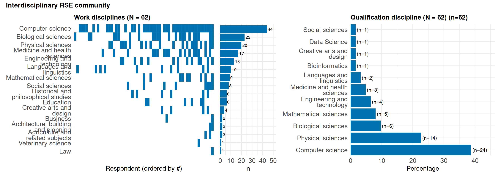
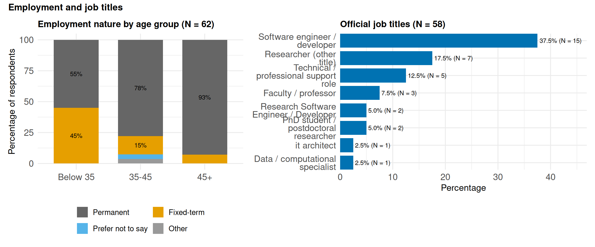
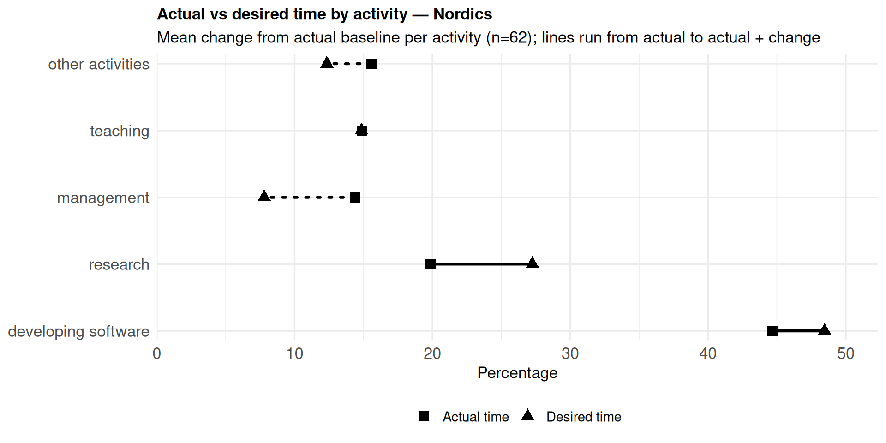
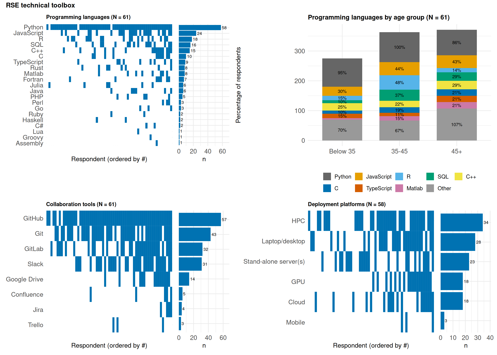
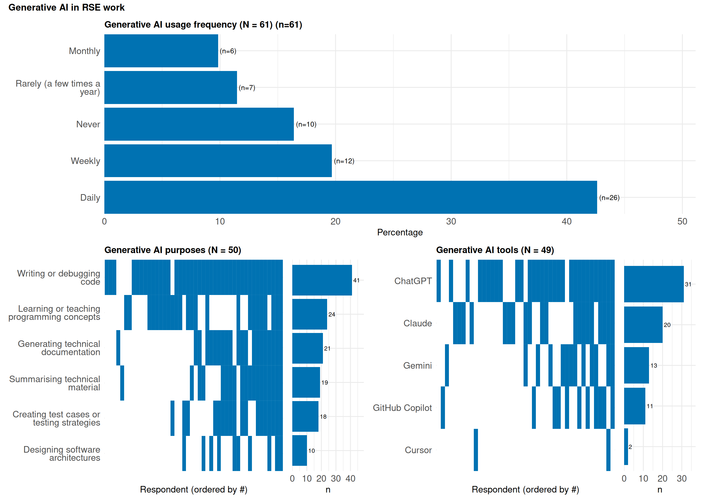
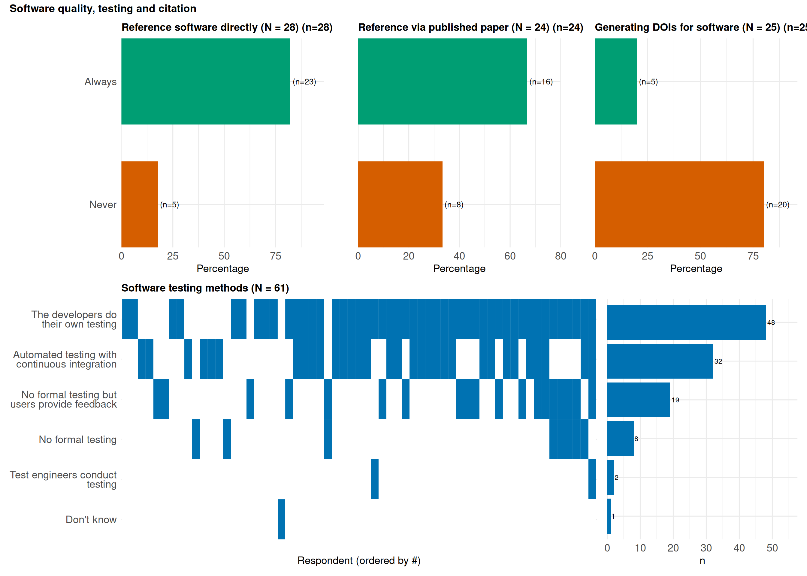
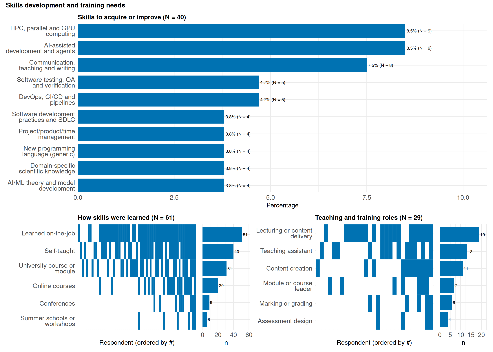
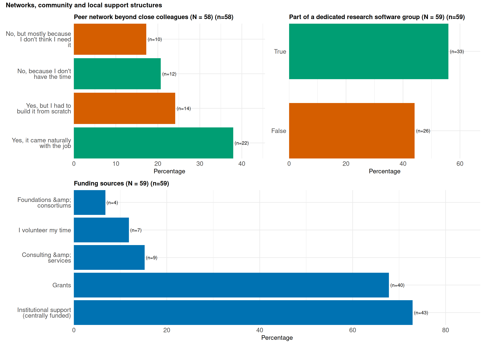
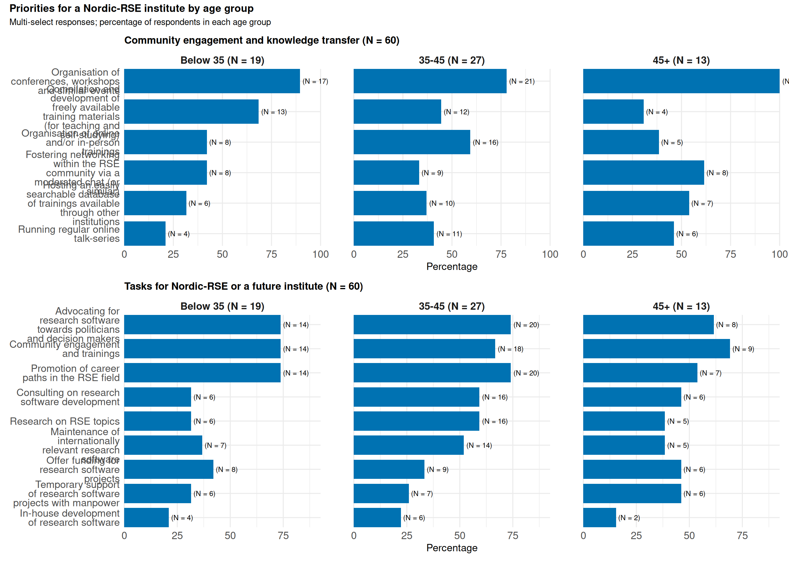

International RSE Survey 2026
Nordic RSEs: satisfied, skilled and in demand but looking for clearer career paths
Nordic insights
This post shows results from the 5th international RSE survey that ran in early 2026. Over 950 Research Software Engineers from 55 countries shared insights into their career and interests. The full dataset is available for download at https://github.com/softwaresaved/RSE_survey_longitudinal/. An interactive dashboard with all international RSE survey data is available at https://rse-survey.soton.ac.uk/superset/dashboard/RSE_survey/. This page presents and analyses the findings on the Nordic and Baltic countries.
Figures use a colorblind-safe palette (Okabe–Ito). Affirmative responses (Agree/Strongly Agree, True, Yes, Always) share green; negative responses (Disagree/Strongly disagree, False, No, Never) share orange-red; neutral options and aggregated Other categories are grey.
Percentages are computed from the number of respondents who answered each question. Analyses include only submitted Nordic responses (submitdate_0 non-empty): 62 respondents in total, with 10 partial responses excluded. Question-level N can still vary when respondents skipped a question or it did not apply to them.
Submitted responses came primarily from Finland (32.3%), Sweden (30.6%), and Norway (16.1%), with smaller shares from Estonia (12.9%), Denmark (6.5%), and Iceland (1.6%).
The sample spans early-career and mid-career respondents. The most common age groups were 35 to 44 years (44.3%) and 25 to 34 years (32.8%), followed by 45 to 54 years (18.0%). In the following we analyse age groups as three classes: under 35, 35-45, and 45+.
Interdisciplinary RSE community: Broad but concentrated in STEM
Respondents selected a wide range of disciplines in which they work, underlining the interdisciplinary nature of RSE roles. The most frequently selected area was Computer Science, chosen by 71.0% of respondents. This was followed by Biological Sciences at 37.1%, Physical Sciences at 32.3%, and Medicine/Health Sciences at 27.4%.
When respondents described their own disciplinary background, Computer Science was again the most frequently selected option, at 38.7%. Physical Sciences followed at 22.6%, Biological Sciences at 9.7%, and Mathematical Sciences at 8.1%.
In terms of highest education attained, 54.8% held a PhD and 40.3% a Master’s degree.
NoteKey finding
The Nordic RSE community is strongly rooted in computing, but its work spans many scientific domains. However, survey responses are strongly concentrated in STEM while social sciences appear underrepresented.
RSE role and software experience
Of the respondents, 93.5% write software for academic research as part of their job, and 67.2% consider themselves professional software developers. The experience levels are high: 35.5% reported 15+ years of software development experience, followed by 10 years (17.7%) and 5 years (11.3%).
Most respondents have no leadership role: only 8.2% said that the majority of their role comprises leading a group of software developers or RSEs. The majority or respondents write software for more than 2 users (accounting for 75.9%).
Employment and job titles
Most respondents reported relatively stable employment conditions. 74.2% indicated that they are in permanent employment, while 22.6% reported fixed-term employment, and 95.2% reported working full time. However, among respondents under 35, permanent and fixed-term positions are roughly balanced (55.0% permanent and 45.0% fixed-term). This likely reflects the fact that many younger respondents are employed in PhD or postdoctoral positions, which are typically fixed-term by design.
Official job titles may vary. Among retained coded job-title entries, the most frequent category was Software Engineer or Developer (37.5%), followed by Researcher (17.5%), Technical/Professional Support Role (12.5%), and Faculty/Professor (7.5%). In addition, 30.9% of respondents are known in their group by a different job title than their official one; among retained coded alternative-title entries, the most common categories were Bioinformatician (18.8%), Research Software Engineer (12.5%), and Application Expert (6.2%).
Most respondents work in universities (79.0%), and this is also the most common background for their previous role (51.6%), followed by private companies (22.6%).
NoteKey finding
Most respondents are in permanent, full-time employment, while the higher share of fixed-term contracts among younger respondents likely reflects PhD and postdoctoral career stages. RSE work also appears under different job titles.

Time allocation: Protecting time for software and research from management overhead
Respondents indicate that software development sits at the heart of RSE work. Respondents reported spending the largest share of their time on software development, at 44.7% on average. This was followed by research at 20.0%, other activities at 15.6%, and teaching at 14.9%.
When comparing actual and desired time allocation, respondents indicated that they would prefer to spend more time on software development and research, and less time on management and “other activities”. The desired reduction in management time was -6.6 percentage points, while “other activities” showed a desired reduction of -3.2 percentage points. Respondents aged 35-45 and 45+ also indicated a wish to reduce teaching time slightly, by -1.0 percentage point and -3.4 percentage points, respectively, while respondents under 35 indicated a wish to increase teaching time by +3.5 percentage points. (This may reflect the fact that more experienced respondents are also more likely to hold roles with formal teaching or supervision responsibilities. In other words, the wish to reduce teaching time may say less about teaching itself and more about the broader workload attached to more senior or established positions.)
This suggests that RSEs see their greatest value in the direct combination of technical development and research contribution, but that organisational responsibilities can draw time away from this core work.
NoteKey finding
RSEs spend most of their time developing software and would like even more time for software development and research, with less time spent on management. Older respondents’ wish to reduce teaching may reflect greater teaching responsibilities in more senior roles.


Technical toolbox: Python, GitHub, HPC and collaboration
In the multi-select responses on programming languages, Python was selected by 95.1% of respondents, making it by far the most commonly used language. Git was reported as a version control tool by all respondents, and GitHub was selected by 93.4% as a collaboration platform for software development.
Other frequently selected collaboration tools included Git at 70.5%, GitLab at 52.5%, and Slack at 50.8%. Regarding deployment environments, HPC was the most frequently selected platform, at 58.6%, followed by laptops or desktops at 48.3%, stand-alone servers at 39.7%, and cloud platforms at 31.0%. For day-to-day development, 73.3% primarily use GNU/Linux, followed by macOS (15.0%) and Windows (10.0%).
There are also some age-group differences in programming language selections. Among respondents aged 45+, the most frequently selected languages after Python were JavaScript at 42.9%, C++ at 28.6%, and SQL at 28.6%. Among those aged 35-45, R was selected by 48.1%, JavaScript by 44.4%, and SQL by 37%. Among respondents under 35, JavaScript was selected by 30%, while C++ and Rust were each selected by 25%.
NoteKey finding
Python, Git, GitHub and HPC form a central part of the Nordic RSE technical toolbox.

Generative AI in RSE work
When asked how frequently respondents use generative AI tools in RSE-related tasks, 42.6% reported daily use and 19.7% weekly use. A further 9.8% used generative AI monthly and 11.5% rarely, while 16.4% reported never using generative AI in their RSE work.
When asked for what purposes participants use generative AI tools, respondents most frequently selected writing and debugging code, at 82.0%. By contrast, designing software architecture was the least frequently selected use case, at 20.0%. Suggesting that respondents see currently the value in generative AI mainly for practical coding tasks rather than for higher-level software design.
In terms of tools used at work, ChatGPT was selected by 63.3%, followed by Claude at 40.8% and Gemini at 26.5%.
Looking ahead, 59.3% expected generative AI not to significantly change demand for RSE roles over the next five years, while 22.2% expected increased demand and 18.5% expected reduced demand. Most respondents expected positive effects on their own productivity (66.1% increase), but effects on code quality and job satisfaction were more mixed: 44.6% expected code quality to stay the same and 36.8% expected job satisfaction to decrease. When asked what skills are needed to use generative AI effectively, most often answers could be subsummed under the following labels “Critical thinking, scepticism and output validation”, “Foundational software engineering skills”, “Prompt engineering and generative AI literacy”, “Judgment on when and how to use AI”, “Programming language and code comprehension”, and “Testing, QA and verification”.
NoteKey finding
Generative AI is widely used for writing and debugging code, but software architecture is the least common use case, suggesting that higher-level design decisions remain largely human-led.

Software quality, testing and software citation
When asked how respondents test the software they produce, respondents most often selected “developers do their own testing”, at 78.7%. Automated testing with continuous integration was selected by 52.5%, while 31.1% selected “no formal testing but user feedback”.
Among respondents who answered the citation questions, referencing software appears to be common practice. 82.1% said they always reference software directly (N = 28) and 66.7% always reference a published paper describing the software (N = 24). Generating persistent identifiers is less common: 80% (N = 25) said they never generate a DOI or other persistent identifier for their software.
Open-science practices appear widespread with 88.7% of respondents reported having an ORCID ID, and among those who answered the licensing question (N = 39), 94.9% said they always license their software with an open-source licence.
NoteKey finding
Testing is common and referencing software seems to be standard practice among those who answered the citation questions, but generating persistent identifiers such as DOIs is less common. ORCID use and open-source licensing are already widespread.

Job satisfaction and labour market demand
A positive result is the high level of satisfaction among respondents. 87.1% reported being satisfied with their current job position, while only 4.8% were unsatisfied. Career satisfaction was also high, with 80.3% satisfied and 9.8% unsatisfied.
Respondents also generally viewed their expertise as relevant beyond their current workplace: 69.0% agreed that their experience is in demand on the labour market, compared with 15.5% who disagreed. This confidence appears across age groups, and is especially strong among respondents aged 45+, where 83.3% agreed that their experience is in demand. Among those under 35, 73.7% agreed, and among those aged 35-45, 57.7% agreed while 19.2% disagreed.
Recognition of research contribution was stronger from supervisors than institutions. 81.4% agreed that their contribution is recognised by their supervisor, compared with 61.0% who agreed that it is recognised by their institution. Among respondents aged 45+, institutional recognition was lower (53.8% agree, 30.8% disagree), while supervisor recognition remained high (85.7% agree).
NoteKey finding
Most respondents are satisfied with their jobs and careers, and feel their experience is in demand. Recognition from supervisors is felt stronger than recognition from institutions.

Career progression and promotion uncertainty
While RSEs are satisfied and feel in demand, many do not see clear opportunities for progression within their current roles.
When asked whether it would be difficult to get an equivalent job, 42.4% agreed that it would not be very difficult, while 28.8% disagreed.
Regarding promotion prospects, overall, 48.3% disagreed that they are likely to gain a promotion within their current group, while only 20.7% agreed. This becomes more pronounced with age and experience. Among respondents aged 45+, 58.3% disagreed and only 8.3% agreed. Among those aged 35-45, 53.8% disagreed and 15.4% agreed. Respondents under 35 were more optimistic, with 36.8% disagreeing and 31.6% agreeing. However, this age pattern might simply reflect the fact that more experienced respondents may already be in more senior positions, where further promotion is naturally less frequent or less clearly defined.
The clarity of promotion processes appears more challenging. Overall, 51.8% disagreed that the process to gain a promotion is clear and understandable, compared with 28.6% who agreed. Uncertainty is stronger among older respondents: in the 45+ group, 58.3% disagreed and 25% agreed, while in the 35-45 group, 58.3% disagreed and 20.8% agreed. Respondents under 35 found the process somewhat clearer, with 42.1% disagreeing and 36.8% agreeing. This age difference may partly reflect how respondents at different career stages interpret “promotion”. For many younger respondents, especially those in PhD positions, the next step may be relatively well defined: completing the doctoral thesis and moving to the next career stage. For mid-career and senior RSEs, progression may be less standardised, particularly where institutions do not have formal RSE career ladders or clear technical advancement routes.
The same pattern appears in perceptions of wider career opportunities. Overall, 40.4% disagreed that there are many opportunities within their chosen career plan, while 33.3% agreed. Younger respondents were much more optimistic: among those under 35, 60% agreed and 20% disagreed. Among those aged 35-45, only 15.4% agreed, while 42.3% disagreed and many were indifferent. Among respondents aged 45+, 72.7% disagreed and 27.3% agreed.
At the same time, 43.9% agreed that their next position is likely to be a Research Software Engineer or Research Software Developer role, suggesting that many respondents still see themselves continuing on an RSE career path even when promotion routes feel unclear.
NoteKey finding
Promotion routes are often unclear, especially beyond early-career stages where progression may no longer be tied to defined PhD milestones.

Skills development and training needs
On the question how respondents did learn the skills they need to be come RSE, 83.6% selected learning on the job, while 65.6% selected self-taught learning. A university course or module was selected by 50.8%, and online courses by 32.8%.
Looking ahead, the most common categories among retained coded skill entries were “AI-assisted development and agents” (22.5%), “HPC, parallel and GPU computing” (22.5%), “communication, teaching and writing” (20.0%), “DevOps, CI/CD and pipelines” (12.5%), and “software testing, QA and verification” (12.5%).
Training involvement is varied. 47.5% of respondents reported taking part in providing training one to two times per year, while 29.5% reported no training provision. When asked about training programmes, most responses referred to local/in-house trainings, CodeRefinery, HPC and research computing trainings, and workshops, tutorials, and hackathons.
Half of respondents (50.9%) teach or support credit-bearing modules or courses, including 61.1% of those under 35 and 35.7% of those aged 45+. When granted time for personal skills development, 38.3% said they always have some time to dedicate to their own skills, while 28.3% have time only in weeks with a low workload. Many respondents also reported teaching-related roles: lecturing or content delivery was selected by 65.5%, teaching assistant by 44.8%, and content creation by 37.9%.
NoteKey finding
Most RSEs learned their skills through practice and self-study, and want further development in AI development, HPC, DevOps, testing and communication.

Networks, community and local support structures
62.0% of respondents reported having a peer network beyond their closest colleagues, including 37.9% for whom it came naturally with the job and 24.1% who had to build such a network from scratch. 17.2% indicated that they do not need a peer network.
A majority of respondents, 55.9%, reported being part of a dedicated research software group within their organisation. This suggests that Nordic RSEs are already finding ways to connect, but that stronger structures could make peer support, knowledge exchange and collaboration more accessible to everyone.
54.8% regularly change the researchers they work with, and the most common audiences for their code were researchers in their own group (48.4%), their whole organisation (41.9%), and researchers anywhere in their country (38.7%).
44.1% are members of an RSE association, with membership highest among respondents aged 35-45 (56.0%) and lowest among those aged 45+ (21.4%). Among respondents who answered the follow-up on interest in joining an RSE organisation, 78.6% said they would be interested. For those who answered what they would hope to get from such an organisation, networking was selected by 85.1%, research software standards by 72.3%, training by 57.4%, and research collaborations by 53.2%. Priorities varied by age: respondents under 35 emphasised job opportunities (66.7%), while those aged 45+ placed more weight on research collaborations (63.6%).
Funding sources show a combination of institutional and project-based support. Institutional support was selected by 72.9% and grants by 67.8%. However access to dedicated RSE funding appears limited: only 16.7% said they have access to RSE-type grants in their institution or country, while 40.0% said no and 43.3% did not know.
NoteKey finding
Many RSEs have peer networks, but a significant share had to build them themselves. A majority also belong to dedicated research software groups, and many see value in joining broader RSE associations for networking, standards and training.

Publications, dissemination and conferences
51.6% of respondents have published a paper about their software, for example in journals such as JOSS or SoftwareX. When software contributes to a paper, acknowledgement practices vary: being named as co-author is common (25.8% always, 54.8% sometimes), while being named as main author is rare (2.9% always, 64.7% never). Younger respondents were more likely to be named as co-authors (57.1% always among those under 35).
47.4% of respondents have presented software work at a conference or workshop. Often named conference were related to labels “Digital Humanities and GLAM”, “HPC and e-infrastructure”, “Chemistry, materials and photon science”, “Astronomy, space and physics”, and “RSE community conferences”.
NoteKey finding
Many Nordic RSEs publish and present their software, but authorship and acknowledgement practices remain varied, especially for main-author credit.
Project workload and resilience
RSE workloads typically span multiple projects. 80.3% of respondents are currently involved in one to four software projects, and 39.7% work on projects that typically include a project manager.
Project resilience is a concern. 58.9% said their current project would stall if just one knowledgeable developer left, and only 16.9% work on projects that typically have a plan to cope with developers leaving.
NoteKey finding
Many projects depend on very few knowledgeable developers and rarely have succession or departure plans in place.
What respondents want from a Nordic-RSE institute
When asked how Nordic-RSE could foster community engagement and knowledge transfer, respondents most often selected organisation of conferences, workshops and similar events, at 86.7%. Other priorities differed by career stage. Respondents under 35 most often selected compilation and development of freely available training materials (68.4%). Those aged 35-45 most often selected organisation of online and/or in-person trainings (59.3%). Respondents aged 45+ most often selected fostering networking within the RSE community via a moderated chat (61.5%).
When asked what tasks should be undertaken by a Nordic-RSE institute, respondents most often selected advocating for research software towards politicians and decision makers (71.7%), community engagement and training (70.0%), and promotion of career paths in the RSE field (70.0%). Among respondents under 35, all three ranked equally at 73.7%. These priorities align closely with the broader survey findings: the community is skilled and satisfied, but wants clearer career structures, and more opportunities to learn and connect.
NoteKey finding
Respondents see a Nordic-RSE institute primarily as a platform for conferences and workshops, advocacy, career development, and community training.

What’s next
These findings will directly shape how we, together with you at Nordic-RSE develop our activities and priorities going forward. We’ll follow up with a separate post on the concrete steps we’re taking in response. We will also link to resources on where to find training, networking and career that already exist for RSEs in the Nordics today. If you would like to get involved, come to one of our coffee breaks or biweekly meetings: https://nordic-rse.org/join/